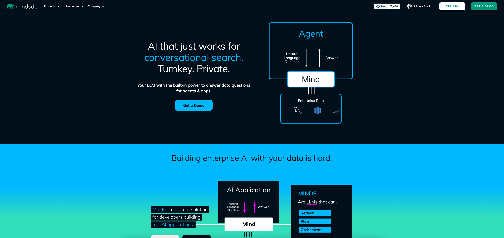
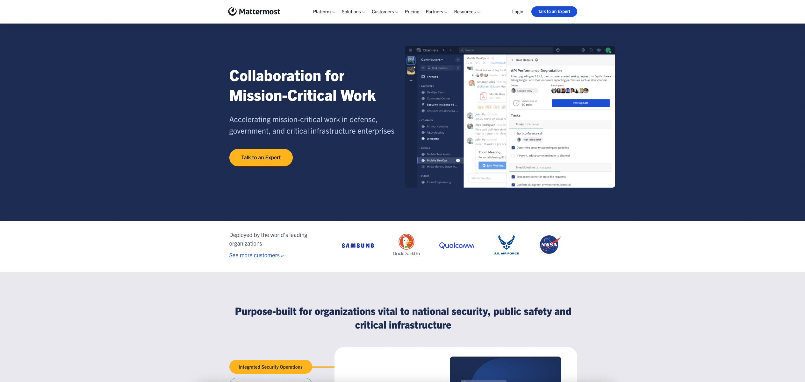
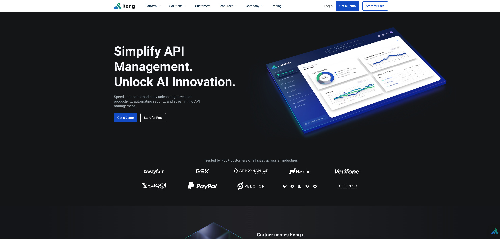
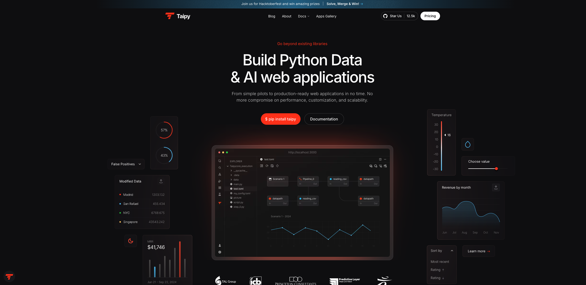
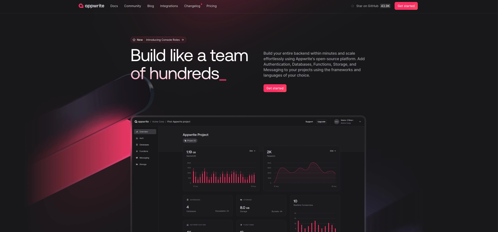

1、mindsdb

加星数：26.4k
技术栈：python，SDK (Golang, js, ruby, rust, C#, java, Cli)
GitHub 地址：https://github.com/mindsdb/mindsdb
项目介绍：MindsDB 是一个开源的机器学习平台，旨在简化 AI 模型的创建、训练和部署过程。它允许开发者使用熟悉的 SQL 查询语言来构建和操作机器学习模型，从而降低了 AI 开发的门槛。
2、Mattermost

加星数：30.3k
技术栈：TypeScript, Golang
GitHub 地址：https://github.com/mattermost/mattermost
项目介绍：Mattermost 是一个强大的开源协作平台，特别适合软件开发团队。它提供了丰富的功能和高度的可定制性，确保团队在整个软件开发生命周期中能够高效、安全地协作。通过自托管，用户可以完全控制他们的数据和平台的运行环境。
3、Kong

加星数：39k
技术栈：Lua, Perl, Raku, Starlark, Shell, Python
GitHub 地址：https://github.com/Kong/kong
项目介绍：Kong API Gateway 是一个功能强大且高度可扩展的 API 网关，适用于各种环境。它以高性能和丰富的功能集（如安全性、负载均衡和监控）而著称。通过插件系统，Kong 可以轻松扩展其功能，满足不同用户的需求。此外，Kong 还提供了高级的 AI 功能，支持多种大语言模型，帮助用户实现智能化的 API 管理和优化。
4、Taipy

加星数：12.5k
技术栈：python, typescript
GitHub 地址：https://github.com/avaiga/taipy
项目介绍：Taipy 是一个强大的工具，专为数据科学家和机器学习工程师设计，帮助他们构建数据和 AI 的 Web 应用程序。通过简化开发和部署流程，Taipy 使用户能够专注于数据和 AI 算法的开发。其仅需 Python 语言的特点，使得用户无需学习新的编程语言，从而降低了使用门槛。Taipy 还提供了强大的 UI 生成和场景/数据管理功能，进一步简化了项目的开发和管理。
5、appwrite

加星数：44.1k
技术栈：TypeScript, php
GitHub 地址：https://github.com/appwrite/appwrite
项目介绍：Appwrite 是一个强大的端到端后端服务器，专为 Web、移动、原生或后端应用程序设计。通过抽象复杂性和提供一整套现成的 API 和工具，Appwrite 使开发者能够更快地构建安全的应用程序。其 Docker 微服务架构还使得部署和扩展变得更加方便。
参考资料：
https://dev.to/rohan_sharma/top-open-source-reposprojects-to-contribute-hacktoberfest-edition--273o